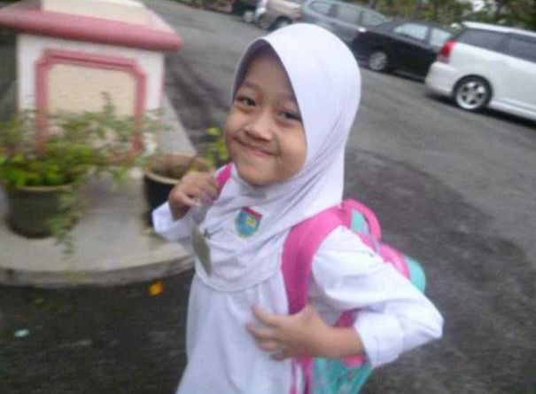

Sekolah Kebangsaan Dato Hashim (2), Kelantan

Tahun: 2012 - 2017
UPSR: 4A 2B 1C
The place where I learnt & grew up.
Tahun: 2012 - 2017
UPSR: 4A 2B 1C
The place where I learnt & grew up.
Year: 2018 - 2022
SPM: 1A 3B 2C 1D
I was a "Pembimbing Rakan Sebaya" and active in joining Poem Reciting Competition.
Year: 2023 - Now
Diploma in Information Management
Current CGPA: 3.18
Gain lots of experience in handling organization. I am holding high position for 2 organizations including the president of the Emcee Department and the Deputy Secretary of Jawatankuasa Perwakilan Non Resident (JPNR)
“Say, ‘Are those who know equal to those who do not know?’ Only they will remember [who are] people of understanding.” (Quran 39:9)